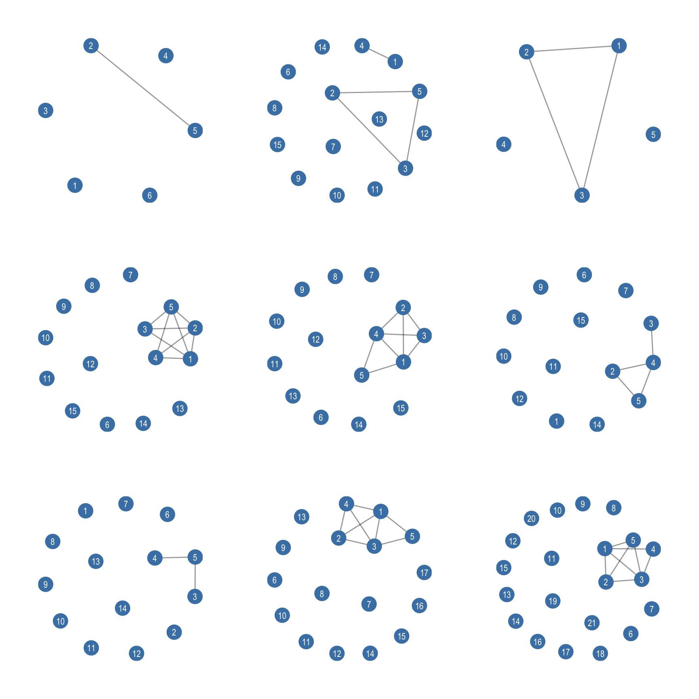
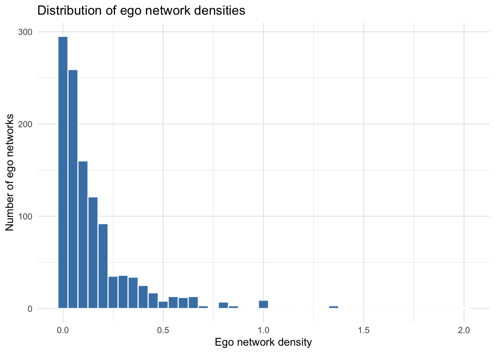
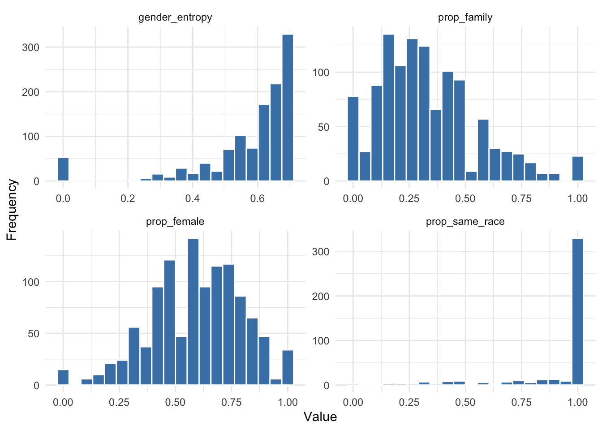
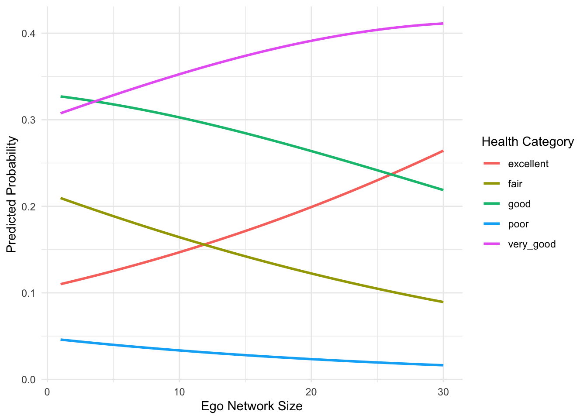
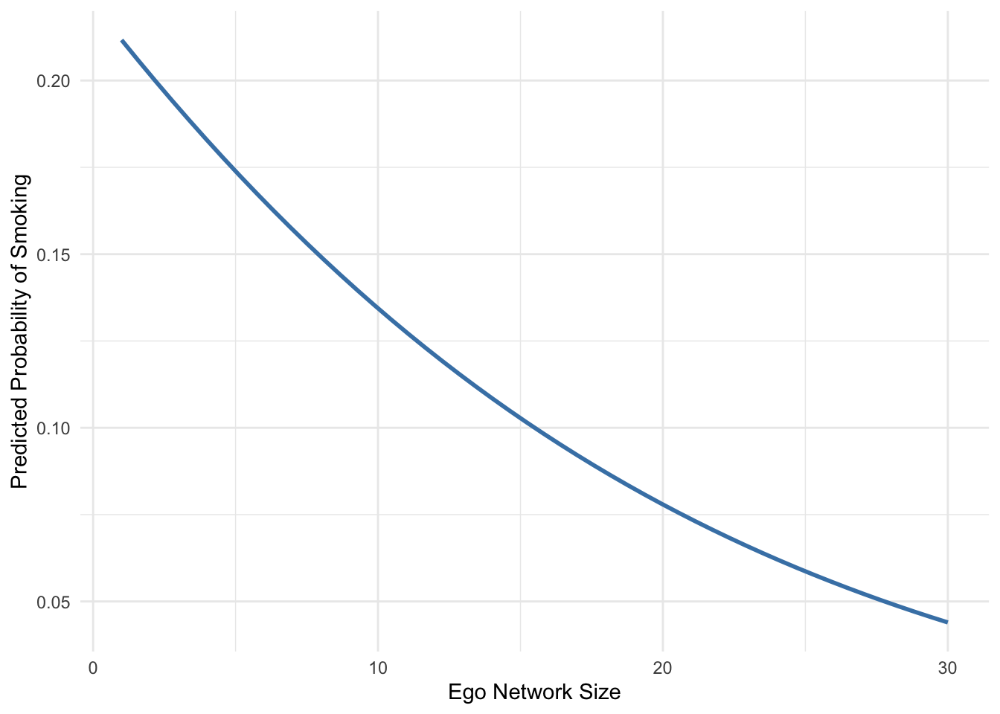
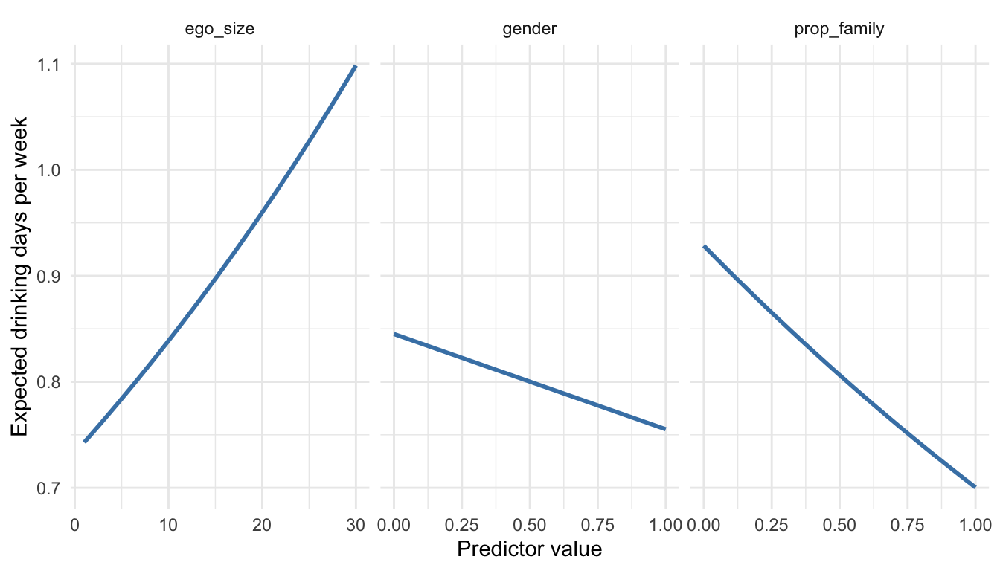

library(igraph)
library(egor)
library(networkdata)
library(ggraph)
library(patchwork)
library(tidyverse)
library(knitr)
library(MASS)7 Ego Networks
Ego networks refer to the personal network surrounding a single focal individual, known as the ego. An ego network includes the ego, the people directly connected to them, so called alters, and the relationships among those alters.
Rather than examining an entire community or organization, ego network analysis focuses on the immediate social environment of one person, allowing researchers to understand how information, resources, influence, or support flow through that individual’s connections.
By analyzing the size of the network, the strength of ties, the diversity of contacts, and the level of interconnectedness among alters, scholars can assess factors such as social capital, access to opportunities, and resilience. Ego networks are especially useful in studying phenomena like job searching, knowledge sharing, health behaviors, and online social interaction, where an individual’s direct relationships play a critical role in shaping outcomes.
In this chapter, we will begin by introducing the fundamentals of ego network data and learning how to use the egor package to manipulate, construct, and visualize ego networks. We will then examine substantive research questions related to homophily; the tendency for similar individuals to associate with one another more frequently than with dissimilar others, across various demographic dimensions. Finally, we will explore an applied example in which properties of ego networks are used to predict important outcomes of interest.
7.1 Packages Needed for this Chapter
Note
The egor package works with ego network data in tidy format, meaning it follows tidy data principles. In tidy data, each row represents one observation and each column represents one variable. Instead of storing everything in a single large matrix, ego network data are separated into three linked tables: one containing information about egos, one containing information about alters, and one containing the ties among alters. These tables are connected through ID variables that indicate which alters belong to which ego and which alters are tied to one another. This structure makes the data easier to understand, manipulate, and analyze using tools from the tidyverse, while still preserving the relational nature of network data.
7.2 Ego Network Data Structure
Ego network data are typically generated through survey-based approaches that capture information about individuals and their immediate social surroundings. In one common design, respondents (egos) are asked to name the people with whom they have specific types of relationships and to describe the connections among those named individuals (alters), thereby providing both node-level and tie-level information from a single informant. A more elaborate strategy uses a two-stage snowball approach: after the initial respondent identifies their contacts, those contacts are subsequently surveyed about their relationships with one another, allowing for more detailed mapping of ties within the ego’s local network. Although data collected in these ways do not reveal how these personal networks are embedded within the broader population structure, they enable researchers to estimate the distribution and characteristics of ego network forms across even very large populations.
An important methodological implication of this design is that survey-based ego network data typically produce independent observations: each ego network is centered on a different respondent and represents a separate local structure. As a result, ego networks can often be treated as independent units of analysis, which allows researchers to apply standard statistical models (such as regression models) to explain variation in network characteristics (e.g., density, composition, or diversity) across egos.
Methodologically, such data consist of multiple distinct networks, each centered on a different ego and typically composed of different actors. This means that each ego network should be stored and analyzed as a separate actor-by-actor matrix rather than combined into a single stacked dataset, since the matrices do not represent multiple relations among the same set of individuals.
A second common source of ego network data involves deriving them from complete network datasets that already contain information about all actors and ties within a bounded population. In this case, researchers can extract the local network surrounding a focal actor directly from the larger structure. Simple extraction procedures allow analysts to isolate an ego and their direct ties, though these methods may omit information about relationships among the alters themselves. More comprehensive approaches rely on identifying a defined neighborhood—such as through a previously constructed attribute or partition that marks members of a particular ego’s local environment—and then generating a subgraph that preserves both ego–alter and alter–alter ties. Unlike survey-generated ego networks, these extracted ego networks remain embedded within a known global structure, enabling comparisons between local and whole-network properties.
7.2.1 Constructing an Ego Network with egor
An egor object stores the multiple data levels required for ego-centered network analysis. These levels include ego-level data (attributes of respondents), alter-level data (attributes of the individuals named by the respondent), and alter–alter ties (relationships among those alters).
In this chapter, we draw on ego network data from the UC Berkeley Social Networks Study (UCNets) (Fischer 2020), a longitudinal study of personal networks in the San Francisco Bay Area conducted between 2015 and 2018. Specifically, we use data from the first wave and select only a subset of variables relevant for the examples presented here. Several of these variables are also recoded to create analytically useful ego-, alter-, and alter–alter-level measures. The full code used to construct the dataset is provided in the Appendix A. This code already processes the raw survey files and combines them into an egor object, the data structure used by the egor package for ego-centered network analysis. An egor object contains three linked levels of data: ego-level attributes (characteristics of the respondents), alter-level attributes (characteristics of the individuals named in each respondent’s personal network), and alter–alter ties (relationships among those alters within each ego network). Because the UCNets data are restricted-access, readers must register and obtain access themselves in order to reproduce the dataset from the original files. Further information about the study is available at the UCNets project website.
We begin by exploring each of the three components of the egor object (ego attributes, alter attributes, and alter–alter ties), in order to understand how the ego network data are structured before proceeding to the analysis.
head(ego_net_w1$ego) # ego level# A tibble: 6 × 19
.egoID gender year_birth age married pets home_owner informal_groups health
<chr> <dbl> <dbl> <dbl> <dbl> <dbl> <dbl> <dbl> <ord>
1 30000… 1 1961 53.8 0 0 0 1 fair
2 30000… 0 1964 51.3 0 0 0 1 good
3 30000… 1 1951 63.7 0 1 0 0 good
4 30000… 1 1959 55.9 1 1 1 1 very_…
5 30000… 1 1952 63.1 1 0 1 0 excel…
6 30000… 1 1949 66.3 0 0 0 0 fair
# ℹ 10 more variables: lose_weight_advice <dbl>, smoker <dbl>,
# drinking_days <dbl>, marijuana_use <dbl>, extraversion <dbl>,
# education <ord>, race <fct>, birth_continent <fct>, religion <fct>,
# income <ord>head(ego_net_w1$alter) # alter level# A tibble: 6 × 6
.altID .egoID gender family same_race same_age
<chr> <chr> <dbl> <dbl> <dbl> <dbl>
1 1 3000000000036 1 1 1 1
2 2 3000000000036 0 0 1 1
3 3 3000000000036 1 0 1 NA
4 4 3000000000036 1 0 1 NA
5 5 3000000000036 0 0 1 1
6 6 3000000000036 1 0 1 NAhead(ego_net_w1$aatie) # alter-alter ties# A tibble: 6 × 4
.egoID .srcID .tgtID weight
<chr> <chr> <chr> <dbl>
1 3000000000036 2 5 1
2 3000000000036 2 5 1
3 3000000000156 2 3 1
4 3000000000156 3 5 1
5 3000000000156 2 3 1
6 3000000000156 2 5 1Each of the three tables is linked through identifier variables that ensure the different levels of information correspond to the correct ego networks. The variable .egoID appears in all three tables and serves as the key that connects respondent-level attributes in the ego table to the individuals they named in their personal networks in the alter table, and to the relationships among those alters recorded in the alter–alter tie table.
In the alter-level table, each network member receives an identifier .altID, which uniquely identifies alters within a given ego network. Additional variables describe characteristics of the alter, including gender, whether the alter is a family member (family), whether the alter shares the same race as the ego (same_race), and whether the alter is approximately the same age as the ego (same_age).
The alter–alter tie table records the relationships among alters within each ego network. These ties are based on survey questions asking respondents how well pairs of alters know each other (e.g., “How well does name 1 know name 2?”), with response options such as very well, know a little, or do not know/something else. For the purposes of constructing the network, responses indicating that alters know each other “very well” or “a little” were coded as a tie. The pairwise variables were reshaped into long format, and the identifiers .srcID and .tgtID indicate which two alters are connected. Because only positive ties were retained, the resulting weight variable is constant and equal to 1 for all alter–alter ties in the final dataset.
Before proceeding with the analysis, we remove respondents for whom the variable numgiven is missing in the ego-level data. This variable records how many alters each respondent named and is required for several of the descriptive measures used later in the chapter. Because numgiven records how many alters a respondent named, a missing value at the ego level implies that no alter information is recorded for that respondent. Consequently, it is sufficient to remove missing values only from the ego table, since the alter and alter–alter tie tables contain entries only for egos who actually reported network members.
Examining the dimensions of the three components after removing missing values (dim(ego_net_w1$ego), dim(ego_net_w1$alter), and dim(ego_net_w1$aatie)) provides a quick overview of the dataset. The ego table now contains 1159 respondents. Across these respondents, a total of 12209 alters were named, each linked to a specific ego via .egoID and uniquely identified within each ego network by .altID. The alter–alter tie table contains 6696 rows, with each row representing a relationship between two alters within the same ego network. These ties are identified by the .egoID of the corresponding ego and the .srcID and .tgtID variables that indicate the two alters involved.
7.3 Plotting Ego Nets
We now plot the networks using igraph. The first step is to convert the egor object into a list of igraph objects using as_igraph() from the egor package. Below, we create the list and inspect the first three ego networks.
# Convert egor object to a list of igraph ego networks
g <- as.igraph(ego_net_w1)
# Inspect the first three ego networks
g[1:3][[1]]
IGRAPH b508638 DNW- 6 2 --
+ attr: .egoID (g/c), name (v/c), .egoID (v/c), gender (v/n), family
| (v/n), same_race (v/n), same_age (v/n), .egoID (e/c), weight (e/n)
+ edges from b508638 (vertex names):
[1] 2->5 2->5
[[2]]
IGRAPH df1009c DNW- 15 8 --
+ attr: .egoID (g/c), name (v/c), .egoID (v/c), gender (v/n), family
| (v/n), same_race (v/n), same_age (v/n), .egoID (e/c), weight (e/n)
+ edges from df1009c (vertex names):
[1] 2->3 3->5 2->3 2->5 1->4 2->5 3->5 1->4
[[3]]
IGRAPH 16f3028 DNW- 5 6 --
+ attr: .egoID (g/c), name (v/c), .egoID (v/c), gender (v/n), family
| (v/n), same_race (v/n), same_age (v/n), .egoID (e/c), weight (e/n)
+ edges from 16f3028 (vertex names):
[1] 1->2 1->3 1->2 2->3 1->3 2->3
Note
If we instead wanted to work within the statnet framework, we could use as_network() to convert the data into objects of class network.
After running as_igraph(), we obtain a list of ego networks in igraph format, where each element of the list corresponds to one ego’s personal network. The attributes stored at the alter level are automatically transferred as vertex attributes, and the alter–alter tie information (including edge weights) is preserved as edge attributes. By default, the ego node itself is not included in these igraph representations. This is common practice because ego is, by definition, connected to all alters, and therefore contributes little additional structural variation in many visualizations or structural measures. In later sections, we will examine statistics that explicitly incorporate both ego and alter information.
We now visualize a subset of the data by plotting the first 9 ego networks in the list using ggraph. This is shown in Figure 7.1.
plots <- lapply(g[1:9], function(g) {
# rebuild a clean graph using only structure + names
el <- as_edgelist(g, names = TRUE)
vn <- V(g)$name
if (length(el) == 0 || nrow(el) == 0) {
g_clean <- make_empty_graph(n = length(vn), directed = FALSE)
V(g_clean)$name <- vn
} else {
g_clean <- graph_from_edgelist(el, directed = FALSE)
# add back isolated vertices, if any
missing_v <- setdiff(vn, V(g_clean)$name)
if (length(missing_v) > 0) {
g_clean <- add_vertices(g_clean, nv = length(missing_v), name = missing_v)
}
}
ggraph(g_clean, layout = "kk") +
geom_edge_link(alpha = 0.4) +
geom_node_point(size = 6, color = "steelblue") +
geom_node_text(aes(label = name), size = 3, color = "white") +
theme_graph()
})
wrap_plots(plots, ncol = 3)
7.4 Descriptive Statistics for Ego Networks
One of the most commonly used structural measures in ego network analysis is density. Density captures the proportion of all possible alter–alter ties that are actually present in an ego network. In other words, it tells us how interconnected an ego’s alters are with one another. For example, if an ego has 5 alters, there are \[ \frac{5 \times (5 - 1)}{2} = 10 \] possible undirected ties among those alters. If all 10 ties are present, density equals 1 (a fully connected clique). If only 8 of the 10 possible ties are present, density equals 0.8.
Density is often of substantive interest because it reflects the level of cohesion within a personal network. Highly dense ego networks (values close to 1) indicate tightly knit groups in which most alters are connected to one another. Such cohesive structures can facilitate trust, norm enforcement, and social support, as information circulates quickly and reputational mechanisms are strong. However, according to structural hole theory (Burt 1992), dense networks tend to generate redundant information because alters are connected to many of the same people and share overlapping perspectives. The key advantages of social capital derive not primarily from the attributes of one’s alters, but from the structure of the ego network itself. Individuals benefit when they bridge gaps, so-called structural holes, between otherwise disconnected groups. In low-density networks, ego may occupy a brokerage position linking clusters that are not directly connected to each other, thereby gaining access to diverse, non-redundant information and potential strategic advantages (such as faster promotion within organizations). Density therefore captures an important theoretical trade-off between cohesion and brokerage in ego network structure.
We can calculate density for each ego network using the ego_density() function applied to our egor object. Note that ego networks with 0 or 1 alters will have density equal to NaN, because density is undefined when no alter–alter ties are possible. There are 10 such values and they are removed from the plot below.
dens <- ego_density(ego_net_w1)
head(dens)# A tibble: 6 × 2
.egoID density
<chr> <dbl>
1 3000000000036 0.133
2 3000000000156 0.0762
3 3000000000271 0.6
4 3000000000317 0.171
5 3000000000346 0.152
6 3000000000349 0.0549sum(is.nan(dens$density)) # number of NaN's[1] 10ggplot(dens, aes(x = density)) +
geom_histogram(binwidth = 0.05, fill = "steelblue", color = "white") +
labs(
x = "Ego network density",
y = "Number of ego networks",
title = "Distribution of ego network densities"
) +
theme_minimal()Warning: Removed 10 rows containing non-finite outside the scale range
(`stat_bin()`).
7.4.1 Network Composition Based on Alter Attributes
A useful way to describe ego networks is to examine the composition of alters within each network. Rather than focusing on the structure of ties among alters, compositional measures summarize who is present in the ego’s personal network. These measures are obtained by aggregating alter attributes within each ego network.
The comp_ply() function from the egor package provides a convenient way to compute such summaries. It applies a function to an alter attribute within each ego network and returns one value per ego. In our dataset, the alter-level data include several characteristics, such as gender, whether the alter is a family member, and whether the alter shares the same race as the ego (same_race). Using these variables, we can construct several interpretable measures of network composition.
Proportion of Family Members
A simple but informative compositional measure is the proportion of family members within an ego network. This captures the extent to which a respondent’s personal network is centered around kin relationships rather than non-kin ties such as friends, coworkers, or acquaintances. Networks with a high proportion of family members may indicate stronger reliance on kin-based support systems, whereas networks with fewer family members may reflect more diverse social connections outside the household or extended family.
In our alter-level data, the variable family indicates whether an alter is a relative (including spouse/partner, parent, child, sibling, or another relative). Using comp_ply(), we can compute the proportion of alters who are family members for each ego network.
prop_family <- comp_ply(ego_net_w1, "family", mean)
head(prop_family)# A tibble: 6 × 2
.egoID result
<chr> <dbl>
1 3000000000036 0.167
2 3000000000156 0.0667
3 3000000000271 0
4 3000000000317 0.467
5 3000000000346 0.533
6 3000000000349 0.714 Gender Composition of the Network
Another compositional measure describes the gender composition of ego networks. This measure captures the share of alters who are female within each respondent’s personal network. Examining gender composition can reveal patterns of gender-based social organization and potential gender homophily, where individuals tend to form ties with others of the same gender.
In our alter-level data, gender is coded as 0 = male and 1 = female. By taking the mean of this binary variable across alters within each ego network, we obtain the proportion of female alters in each network. Values close to 0 indicate networks composed mostly of men, values close to 1 indicate networks composed mostly of women, and values around 0.5 suggest a more gender-balanced network.
prop_female <- comp_ply(ego_net_w1, "gender", mean)
head(prop_female)# A tibble: 6 × 2
.egoID result
<chr> <dbl>
1 3000000000036 0.667
2 3000000000156 0.2
3 3000000000271 1
4 3000000000317 0.6
5 3000000000346 0.467
6 3000000000349 0.5 Racial Homophily
A third compositional measure captures racial homophily within ego networks. Homophily refers to the tendency for individuals to form social ties with others who share similar characteristics. Here we examine whether alters share the same race as the ego.
The alter-level variable same_race indicates whether the respondent reported that the alter is of the same race as themselves (1 = same race, 0 = different race). By averaging this binary variable across alters within each ego network, we obtain the proportion of alters who share the ego’s race. Higher values indicate more racially homogeneous networks, while lower values suggest greater racial diversity.
prop_same_race <- comp_ply(ego_net_w1, "same_race", mean)
head(prop_same_race)# A tibble: 6 × 2
.egoID result
<chr> <dbl>
1 3000000000036 1
2 3000000000156 0.133
3 3000000000271 NA
4 3000000000317 1
5 3000000000346 1
6 3000000000349 NA To obtain a compact overview of these compositional measures, we combine them into a single summary table.
prop_family <- comp_ply(ego_net_w1, "family", mean)
prop_female <- comp_ply(ego_net_w1, "gender", mean)
prop_same_race <- comp_ply(ego_net_w1, "same_race", mean)
comp_summary <- data.frame(
egoID = prop_family$.egoID,
prop_family = prop_family$result,
prop_female = prop_female$result,
prop_same_race = prop_same_race$result
)
row.names(comp_summary) <- NULL
kable(
head(comp_summary, 10),
digits = 2,
caption = "Summary of compositional measures for ego networks."
)| egoID | prop_family | prop_female | prop_same_race |
|---|---|---|---|
| 3000000000036 | 0.17 | 0.67 | 1.00 |
| 3000000000156 | 0.07 | 0.20 | 0.13 |
| 3000000000271 | 0.00 | 1.00 | NA |
| 3000000000317 | 0.47 | 0.60 | 1.00 |
| 3000000000346 | 0.53 | 0.47 | 1.00 |
| 3000000000349 | 0.71 | 0.50 | NA |
| 3000000000490 | 0.29 | NA | NA |
| 3000000000552 | 0.18 | 0.59 | NA |
| 3000000000560 | 0.14 | 0.57 | NA |
| 3000000000601 | 0.43 | 0.71 | NA |
Several entries may appear as NA. These occur when the compositional measure cannot be computed because the relevant alter attribute is missing or undefined for all alters in that ego network, or when a network contains too few alters to compute a meaningful proportion.
7.4.2 Diversity of Alters Within Ego Networks
While the previous measures summarize the presence of specific alter characteristics, another perspective focuses on the overall diversity of alters within an ego network. Instead of examining whether alters resemble the ego, diversity measures capture how heterogeneous the set of alters is with respect to a given attribute.
One commonly used diversity measure is Shannon entropy, defined as
\[ H = - \sum_i p_i \log(p_i) \]
where (\(p_i\)) represents the proportion of alters belonging to category (\(i\)). Entropy increases when alters are more evenly distributed across categories and decreases when most alters belong to the same category. Networks with entropy close to zero therefore contain alters who are largely similar to one another, while higher values indicate more heterogeneous networks.
In the egor package, entropy-based diversity measures can be computed directly using the function alts_diversity_entropy().
gender_entropy <- alts_diversity_entropy(
ego_net_w1,
alt.attr = "gender",
base = exp(1)
)
head(gender_entropy)# A tibble: 6 × 2
.egoID entropy
<chr> <dbl>
1 3000000000036 0.637
2 3000000000156 0.500
3 3000000000271 0
4 3000000000317 0.673
5 3000000000346 0.691
6 3000000000349 0.693This measure captures the gender diversity of each ego network. Networks in which alters are evenly split between men and women have higher entropy values, whereas networks composed mostly of alters of the same gender have lower values.
We can combine the diversity measure with the compositional measures above and visualize their distributions to better understand how ego networks vary across respondents.
# add entropy to summary table
comp_summary$gender_entropy <- gender_entropy$entropy
# reshape for plotting
comp_long <- comp_summary |>
pivot_longer(
cols = -egoID,
names_to = "measure",
values_to = "value"
)
# plot
ggplot(comp_long, aes(x = value)) +
geom_histogram(bins = 20, fill = "steelblue", color = "white") +
facet_wrap(~ measure, ncol = 2, scales = "free") +
labs(
x = "Value",
y = "Frequency"
) +
theme_minimal()
The distributions reveal several interesting patterns in the composition of ego networks. The proportion of family members varies widely across respondents, indicating substantial heterogeneity in the extent to which personal networks are centered around kin. The gender composition measure is broadly distributed around intermediate values, suggesting that many respondents’ networks contain a mixture of male and female alters rather than being strongly gender-segregated. The gender diversity measure is concentrated toward higher values, indicating that many ego networks contain a relatively balanced mix of male and female alters. Finally, the distribution of racial homophily is highly skewed toward 1, suggesting that most respondents name alters who share their racial background.
These patterns are consistent with well-known findings on homophily in social networks, that is, the tendency for individuals to form ties with others who are similar to themselves (McPherson et al. 2001). In particular, the concentration of prop_same_race near one indicates strong racial homophily in personal networks. At the same time, the distributions of prop_female and gender_entropy suggest that many networks remain gender-mixed rather than fully gender-segregated. Together, these measures show that ego networks are shaped by both similarity and diversity in the social contexts from which alters are drawn.
7.5 Predicting Individual Outcomes Using Ego Network Measures
In the previous sections we examined the structure and composition of ego networks, focusing on characteristics such as family ties, gender composition, and racial homophily. These measures describe how individuals’ personal networks are organized. However, ego network properties can also be used as explanatory variables in statistical models.
As discussed in the introduction, ego network data are typically collected through surveys in which each respondent reports information about their personal contacts. Because each ego corresponds to a distinct survey respondent, the resulting observations can reasonably be treated as independent. This differs from whole-network data, where observations are inherently interdependent. The survey-based structure of ego network data therefore allows us to apply familiar statistical tools such as regression models to examine how network characteristics relate to individual outcomes.
7.5.1 Predicting Self-Reported Health
Here we illustrate this approach by examining whether features of respondents’ ego networks are associated with their self-reported health. Substantively, this is a plausible question: individuals embedded in larger, more diverse, or more supportive personal networks may report better health. At the same time, kin-centered or highly homogeneous networks may provide different forms of support and constraint, so the direction of association is not obvious a priori.
7.5.1.1 Outcome Variable
Are respondents with larger, more diverse, or more kin-centered personal networks more likely to report better health?
So we are basically checking whether individuals embedded in larger, more diverse, or more supportive personal networks may report better health.
Our outcome is the ego-level variable health, which records respondents’ self-rated health. In the data preparation step, this variable was retained as an ordered factor with the categories:
excellentvery_goodgoodfairpoor
Because these categories are ordered but not measured on an interval scale, an ordinal regression model is an appropriate choice.
7.5.1.2 Predictors
We include four ego-network measures as predictors:
ego_size: the number of alters in the ego networkprop_family: the proportion of alters who are family membersgender_entropy: a measure of gender diversity among alters
Note that we do not use prop_same_race due to its high number of missing observations.
To account for basic respondent characteristics, we also include three ego-level controls:
agegendereducation
Together, this model combines network size, network composition, homophily, and diversity, along with standard demographic controls.
7.5.1.3 Preparing the Analysis Data
We first compute ego network size and combine all predictors into a single analysis dataset.
# network size = number of alters per ego
net_size <- ego_net_w1$alter |>
count(.egoID, name = "ego_size")
# compositional measures
prop_family <- comp_ply(ego_net_w1, "family", mean)
prop_same_race <- comp_ply(ego_net_w1, "same_race", mean)
gender_entropy <- alts_diversity_entropy(
ego_net_w1,
alt.attr = "gender",
base = exp(1)
)
# rename columns to merge cleanly
prop_family_df <- prop_family |>
rename(prop_family = result)
prop_same_race_df <- prop_same_race |>
rename(prop_same_race = result)
gender_entropy_df <- gender_entropy |>
rename(gender_entropy = entropy)
# combine into one analysis dataset
analysis_dat <- egos |>
left_join(net_size, by = ".egoID") |>
left_join(prop_family_df, by = ".egoID") |>
left_join(prop_same_race_df, by = ".egoID") |>
left_join(gender_entropy_df, by = ".egoID")
head(analysis_dat) .egoID gender year_birth age married pets home_owner
1 3000000000036 1 1961 53.83333 0 0 0
2 3000000000156 0 1964 51.33333 0 0 0
3 3000000000271 1 1951 63.66667 0 1 0
4 3000000000317 1 1959 55.91667 1 1 1
5 3000000000346 1 1952 63.08333 1 0 1
6 3000000000349 1 1949 66.33333 0 0 0
informal_groups health lose_weight_advice smoker drinking_days
1 1 fair 0 1 9
2 1 good 0 1 9
3 0 good 0 0 6
4 1 very_good 0 0 8
5 0 excellent 0 0 1
6 0 fair 0 0 1
marijuana_use extraversion education race
1 0 4.0 some_college white
2 1 2.0 some_college pacific_islander
3 0 4.0 some_college white
4 0 2.0 master white
5 0 1.0 professional_degree white
6 0 3.5 professional_degree asian
birth_continent religion income ego_size prop_family prop_same_race
1 north_america protestant 35k_45k 6 0.16666667 1.0000000
2 north_america no_religion under_15k 15 0.06666667 0.1333333
3 north_america no_religion 25k_35k 5 0.00000000 NA
4 north_america no_religion under_15k 15 0.46666667 1.0000000
5 north_america catholic under_15k 15 0.53333333 1.0000000
6 north_america buddhist 60k_75k 14 0.71428571 NA
gender_entropy
1 0.6365142
2 0.5004024
3 0.0000000
4 0.6730117
5 0.6909233
6 0.6931472Before estimating the model, it is useful to reorder the health outcome so that higher categories correspond to better health. This makes the interpretation of coefficients more intuitive.
analysis_dat$health_ord <- ordered(
analysis_dat$health,
levels = c("poor", "fair", "good", "very_good", "excellent")
)
table(analysis_dat$health_ord, useNA = "ifany")
poor fair good very_good excellent <NA>
29 137 287 448 256 2 7.5.1.4 Estimating the Model
We now estimate an ordinal logistic regression model using the polr() function from the MASS package.
# treat education as categorical
analysis_dat$education <- factor(analysis_dat$education)
health_model <- polr(
health_ord ~ ego_size + prop_family + gender_entropy +
age + gender + education,
data = analysis_dat,
Hess = TRUE,
na.action = na.omit
)
summary(health_model)Call:
polr(formula = health_ord ~ ego_size + prop_family + gender_entropy +
age + gender + education, data = analysis_dat, na.action = na.omit,
Hess = TRUE)
Coefficients:
Value Std. Error t value
ego_size 0.036763 0.013619 2.6993
prop_family -0.141296 0.259089 -0.5454
gender_entropy -0.156403 0.369930 -0.4228
age -0.004227 0.003141 -1.3457
gender -0.066838 0.116978 -0.5714
education.L 1.099295 0.417016 2.6361
education.Q 0.277373 0.392132 0.7073
education.C -0.642736 0.401649 -1.6002
education^4 -0.399798 0.319163 -1.2526
education^5 -0.194744 0.256395 -0.7595
education^6 -0.209106 0.334843 -0.6245
education^7 0.327806 0.298822 1.0970
education^8 -0.619628 0.206942 -2.9942
Intercepts:
Value Std. Error t value
poor|fair -3.5890 0.3666 -9.7888
fair|good -1.6261 0.3222 -5.0475
good|very_good -0.2238 0.3180 -0.7037
very_good|excellent 1.5334 0.3215 4.7698
Residual Deviance: 3124.629
AIC: 3158.629
(14 observations deleted due to missingness)
Note
Because the education variable was originally stored as an ordered factor, R expanded it into polynomial contrasts when estimating the model. These contrasts can sometimes introduce linear dependencies in the design matrix, especially in the presence of missing data. To simplify interpretation and avoid this issue, we treat education as a categorical factor in the regression model.
7.5.1.5 Interpretation of Model Output
The ordinal logistic regression results suggest that ego network size is positively associated with better self-reported health. The coefficient for ego_size is positive (\(0.037\)) and its corresponding test statistic (\(t = 2.70\)) indicates that the effect is statistically significant at conventional levels. In ordinal logistic regression estimated with polr(), statistical significance can be assessed by examining the ratio of the coefficient to its standard error (the \(t\) value). As a rule of thumb, absolute values larger than about 1.96 correspond to significance at the 5% level under the normal approximation. Applying this criterion, the effect of network size is statistically significant, suggesting that respondents with larger personal networks are more likely to report better health categories.
In contrast, the compositional characteristics of the network do not show strong associations with health in this model. The proportion of family members in the network (prop_family) and the gender diversity of alters (gender_entropy) both have coefficients with \(t\) values well below this threshold, indicating that their effects are not statistically distinguishable from zero in this sample. This suggests that, in this example, the size of the personal network appears to matter more for self-reported health than the specific composition of the network.
Among the control variables, education shows a statistically significant association with health, as indicated by the large \(t\) value for the linear education contrast. This pattern is consistent with a large body of research linking higher educational attainment to better health outcomes. Age and gender, by contrast, do not show statistically significant associations in this model.
Overall, the results illustrate how ego network measures can be incorporated into standard regression frameworks. In this example, network size emerges as the most important network characteristic associated with health, whereas compositional aspects of the network appear less strongly related to the outcome once demographic characteristics are taken into account.
Note
In an ordinal logistic regression, the values listed under “Intercepts” are threshold parameters, not traditional regression intercepts. They define the boundaries between adjacent categories of the ordered outcome (e.g., poor|fair, fair|good). The model assumes an underlying continuous health propensity, and these thresholds determine where respondents transition between the observed health categories. Because they simply partition this latent scale, the thresholds are typically not interpreted substantively; the main quantities of interest are the coefficients of the predictors, which indicate how variables such as ego network size shift respondents along the latent health scale.
7.5.1.6 Predicted Probabilities
Although the coefficients from an ordinal logistic regression indicate how predictors shift respondents along the underlying latent scale of the outcome, they can be difficult to interpret substantively. A more intuitive way to understand the model is to examine predicted probabilities for each category of the outcome variable.
Predicted probabilities translate the regression results into the probability that a respondent falls into each health category (e.g., poor, fair, good, very good, or excellent) given specific values of the predictors. These probabilities make it easier to see how changes in ego network characteristics are associated with differences in expected health outcomes.
For example, we can examine how the predicted probability of reporting different health levels changes as ego network size increases, while holding the other variables constant.
# predicted probabilities for each observation
pred_probs <- predict(health_model, type = "probs")
head(pred_probs) poor fair good very_good excellent
1 0.03121252 0.15537749 0.2959123 0.3613524 0.1561453
2 0.02025457 0.10805282 0.2460178 0.4018487 0.2238261
3 0.02988656 0.15000244 0.2914431 0.3665312 0.1621367
4 0.01573578 0.08646079 0.2141202 0.4120718 0.2716114
5 0.01022860 0.05830848 0.1616812 0.4039483 0.3658334
6 0.01103190 0.06254727 0.1704593 0.4076679 0.3482936Each row now contains the estimated probability that a respondent falls into each of the five health categories according to the fitted model.
To visualize the relationship between network size and health, we can generate predicted probabilities across a range of ego network sizes while holding the other predictors at typical values.
# create a sequence of network sizes
size_seq <- seq(
min(analysis_dat$ego_size, na.rm = TRUE),
max(analysis_dat$ego_size, na.rm = TRUE),
length.out = 50
)
# create prediction dataset
pred_dat <- data.frame(
ego_size = size_seq,
prop_family = mean(analysis_dat$prop_family, na.rm = TRUE),
gender_entropy = mean(analysis_dat$gender_entropy, na.rm = TRUE),
age = mean(analysis_dat$age, na.rm = TRUE),
gender = 0,
education = levels(analysis_dat$education)[1]
)
# compute predicted probabilities
pred_dat <- cbind(
pred_dat,
predict(health_model, newdata = pred_dat, type = "probs")
)
# reshape for plotting
pred_long <- pred_dat |>
pivot_longer(
cols = c(poor, fair, good, very_good, excellent),
names_to = "health_category",
values_to = "probability"
)
ggplot(pred_long, aes(x = ego_size, y = probability, color = health_category)) +
geom_line(linewidth = 1) +
labs(
x = "Ego Network Size",
y = "Predicted Probability",
color = "Health Category"
) +
theme_minimal()
The figure displays the predicted probabilities of reporting each health category as ego network size increases, while holding the other predictors constant at typical values. Overall, the results show a clear pattern: as the number of alters in a respondent’s personal network increases, the probability of reporting better health categories increases, while the probability of reporting poorer health categories declines.
In particular, the predicted probability of reporting excellent health rises steadily with ego network size, and the probability of reporting very good health also increases. At the same time, the probabilities of reporting fair or poor health decrease as networks become larger. This pattern indicates that larger ego networks are associated with a greater likelihood of reporting better health outcomes.
The probability of reporting good health declines slightly as network size increases. This occurs because good is a middle category on the health scale. In ordinal models, probability does not move directly from one category to a single adjacent category. Instead, probability mass is redistributed across all categories when a predictor changes. The probability of reporting good health declines slightly as network size increases. This occurs because “good” is a middle category on the health scale. As network size increases, the predicted probabilities of lower categories such as fair and poor decline, while the probabilities of higher categories such as very good and excellent increase. The reduction in the middle category therefore reflects a redistribution of probability toward the higher end of the health scale..
Taken together, the pattern of increasing probabilities for higher health categories and decreasing probabilities for lower categories suggests that larger ego networks are associated with better self-reported health. This interpretation is consistent with the regression results presented earlier, which indicated a positive association between ego network size and the latent health scale. Substantively, this finding aligns with the idea that individuals embedded in larger personal networks may benefit from greater social support, access to information, and other resources that can contribute to improved health and well-being.
7.5.2 Predicting Smoking Behavior
In the previous example, we examined how ego network characteristics are associated with respondents’ self-reported health. We now illustrate a second application by examining whether features of respondents’ ego networks are associated with a binary health behavior outcome: cigarette smoking.
Smoking behavior is a natural outcome to consider in a network context. Social networks often shape health behaviors through mechanisms such as social norms, peer influence, and access to support. Individuals embedded in larger or more diverse networks may experience different pressures or resources that affect their likelihood of smoking. For example, networks with strong family presence may discourage smoking, while more diverse networks may expose individuals to different behavioral norms.
7.5.2.1 Outcome Variable
Are respondents with larger, more diverse, or more kin-centered personal networks more or less likely to smoke cigarettes?
Our outcome variable is the ego-level indicator smoker, which records whether the respondent reports currently smoking cigarettes.
The variable is coded as:
1= respondent smokes0= respondent does not smoke
Because this outcome is binary, we estimate a logistic regression model.
7.5.2.2 Predictors
We include the same ego-network measures as predictors:
ego_size: the number of alters in the ego network
prop_family: the proportion of alters who are family members
gender_entropy: a measure of gender diversity among alters
As before, we exclude prop_same_race due to the large number of missing observations.
We also include the same ego-level control variables:
agegendereducation
This specification allows us to examine whether network size, network composition, and diversity are associated with smoking behavior while accounting for basic demographic characteristics.
7.5.2.3 Estimating the Model
We estimate a logistic regression model using the glm() function with a binomial link.
smoke_model <- glm(
smoker ~ ego_size + prop_family + gender_entropy +
age + gender + education,
data = analysis_dat,
family = binomial,
na.action = na.omit
)
summary(smoke_model)
Call:
glm(formula = smoker ~ ego_size + prop_family + gender_entropy +
age + gender + education, family = binomial, data = analysis_dat,
na.action = na.omit)
Coefficients:
Estimate Std. Error z value Pr(>|z|)
(Intercept) -0.834686 0.684750 -1.219 0.2229
ego_size -0.060849 0.035252 -1.726 0.0843 .
prop_family -0.988552 0.608703 -1.624 0.1044
gender_entropy 0.174328 0.809086 0.215 0.8294
age -0.011351 0.007343 -1.546 0.1221
gender -0.505703 0.269515 -1.876 0.0606 .
education.L -2.169284 0.874946 -2.479 0.0132 *
education.Q -0.327076 0.830557 -0.394 0.6937
education.C 1.560839 0.781781 1.997 0.0459 *
education^4 0.034602 0.660243 0.052 0.9582
education^5 -0.256551 0.550060 -0.466 0.6409
education^6 0.015995 0.563957 0.028 0.9774
education^7 -0.669260 0.471493 -1.419 0.1558
education^8 0.520699 0.352631 1.477 0.1398
---
Signif. codes: 0 '***' 0.001 '**' 0.01 '*' 0.05 '.' 0.1 ' ' 1
(Dispersion parameter for binomial family taken to be 1)
Null deviance: 510.60 on 1146 degrees of freedom
Residual deviance: 462.89 on 1133 degrees of freedom
(12 observations deleted due to missingness)
AIC: 490.89
Number of Fisher Scoring iterations: 67.5.2.4 Interpretation of Model Output
The logistic regression results examine whether characteristics of respondents’ ego networks are associated with the likelihood of smoking. In logistic regression, coefficients represent the effect of predictors on the log-odds of the outcome. A positive coefficient indicates that higher values of the predictor increase the likelihood of smoking, while a negative coefficient indicates a decrease in the likelihood of smoking. Statistical significance can be assessed using the ratio of the coefficient to its standard error (the \(z\)-statistic). As a rule of thumb, absolute values larger than approximately 1.96 correspond to statistical significance at the 5% level.
Among the network predictors, ego network size (ego_size) shows a negative association with smoking. The coefficient is −0.061, corresponding to an odds ratio of approximately 0.94. This suggests that each additional alter in a respondent’s ego network is associated with roughly a 6% decrease in the odds of smoking, although the effect is only marginally significant. Substantively, this pattern is consistent with the idea that individuals embedded in larger personal networks may experience stronger social norms or social support that discourage smoking.
The proportion of family members in the network (prop_family) also has a negative coefficient, indicating that more kin-centered networks may be associated with lower odds of smoking. However, the effect is not statistically significant in this model. Similarly, gender diversity in the network (gender_entropy) does not show a clear association with smoking behavior, suggesting that variation in the gender composition of alters is not strongly related to smoking in this sample.
Among the demographic controls, gender shows a marginally significant association with smoking. The negative coefficient indicates that respondents coded as female have lower odds of smoking than males. Age does not appear to have a statistically significant effect in this model.
Finally, the results indicate that education is associated with smoking behavior, as reflected in the statistically significant polynomial contrasts for the education variable. These contrasts capture systematic variation in smoking across levels of educational attainment. Substantively, this pattern is consistent with well-established findings that smoking prevalence tends to be lower among individuals with higher levels of education.
Overall, the results demonstrate how ego network measures can be incorporated into standard logistic regression models to study behavioral outcomes. In this example, there is some evidence that individuals with larger personal networks are less likely to smoke, while compositional aspects of the network appear less strongly related to smoking behavior once demographic characteristics are taken into account.
Note
For ease of interpretation, it is often useful to transform the coefficients into odds ratios, which indicate the multiplicative change in the odds of smoking associated with a one-unit increase in the predictor.
exp(coef(smoke_model)) (Intercept) ego_size prop_family gender_entropy age
0.4340106 0.9409650 0.3721150 1.1904458 0.9887130
gender education.L education.Q education.C education^4
0.6030812 0.1142593 0.7210287 4.7628151 1.0352075
education^5 education^6 education^7 education^8
0.7737154 1.0161236 0.5120876 1.6832035 Odds ratios greater than 1 indicate that the predictor is associated with higher odds of smoking, while values below 1 indicate lower odds of smoking.
7.5.2.5 Predicted Probabilities
As with the ordinal model above, predicted probabilities often provide a more intuitive way to interpret logistic regression results.
We can examine how the probability of smoking changes as ego network size increases, while holding the other predictors constant.
size_seq <- seq(
min(analysis_dat$ego_size, na.rm = TRUE),
max(analysis_dat$ego_size, na.rm = TRUE),
length.out = 50
)
pred_dat <- data.frame(
ego_size = size_seq,
prop_family = mean(analysis_dat$prop_family, na.rm = TRUE),
gender_entropy = mean(analysis_dat$gender_entropy, na.rm = TRUE),
age = mean(analysis_dat$age, na.rm = TRUE),
gender = 0,
education = levels(analysis_dat$education)[1]
)
pred_dat$prob_smoke <- predict(
smoke_model,
newdata = pred_dat,
type = "response"
)
ggplot(pred_dat, aes(x = ego_size, y = prob_smoke)) +
geom_line(linewidth = 1, color = "steelblue") +
labs(
x = "Ego Network Size",
y = "Predicted Probability of Smoking"
) +
theme_minimal()
The figure shows how the predicted probability of smoking changes as ego network size increases, while holding the other predictors in the model constant at typical values. The relationship is clearly negative: respondents with larger personal networks are predicted to have a lower probability of smoking.
For individuals with very small ego networks, the predicted probability of smoking is relatively high, at roughly 20 percent. As network size increases, this probability steadily declines. For respondents with very large ego networks, the predicted probability of smoking falls to below 5 percent.
This pattern suggests that individuals embedded in larger personal networks may be less likely to smoke. One possible interpretation is that larger networks provide stronger social norms, greater social support, or more opportunities for social monitoring that discourage smoking behavior.
Of course, whether networks influence smoking behavior also depends on the behaviors of the alters themselves. For example, if many alters smoke, peer influence could increase the likelihood that the ego smokes as well. However, the dataset used here does not contain information about the smoking behavior of alters, so we cannot directly examine such influence processes in this analysis.
7.5.3 Predicting Drinking Frequency
In addition to examining health outcomes and smoking behavior, we can also use ego network characteristics to study patterns of alcohol consumption. Drinking behavior is a natural outcome to consider in a network context because social interactions often occur in settings where alcohol is present. Individuals embedded in larger or more socially active networks may encounter more opportunities to drink, while networks centered around family members may involve different social norms around alcohol use.
Here we examine whether characteristics of respondents’ ego networks are associated with how frequently they drink alcohol.
7.5.3.1 Outcome Variable
Are respondents with larger, more diverse, or more kin-centered personal networks more likely to drink alcohol more frequently?
Our outcome variable is the ego-level variable drinking_days, which records how many days per week the respondent reports having an alcoholic drink.
In the original survey data, this variable is coded as:
0= less than once a week
1= one day a week
2= two days a week
3= three days a week
4= four days a week
5= five days a week
6= six days a week
7= every day
8= less than one drink per week
9= does not drink at all
For the analysis, we recode the variable so that it represents a count of drinking days per week. Respondents who report not drinking at all (9) are coded as 0, and respondents reporting less than one drink per week (8) are also coded as 0. The remaining values already correspond to the number of drinking days per week.
analysis_dat$drinking_days_rec <- analysis_dat$drinking_days
analysis_dat$drinking_days_rec[
analysis_dat$drinking_days %in% c(8, 9)
] <- 0
table(analysis_dat$drinking_days_rec, useNA = "ifany")
0 1 2 3 4 5 6 7 <NA>
340 301 110 128 113 62 69 35 1 Because the outcome variable represents a count of events (drinking days per week), a Poisson regression model is appropriate.
7.5.3.2 Predictors
We include the same ego-network measures used in the previous examples:
ego_size: the number of alters in the ego network
prop_family: the proportion of alters who are family members
gender_entropy: a measure of gender diversity among alters
As before, we exclude prop_same_race due to the large number of missing observations.
We also include three demographic control variables:
age
gender
education
Together, these predictors allow us to examine whether network size, network composition, and diversity are associated with alcohol consumption while accounting for basic demographic characteristics.
7.5.3.3 Estimating the Model
We estimate a Poisson regression model using the glm() function with a Poisson link.
drink_model <- glm(
drinking_days_rec ~ ego_size + prop_family + gender_entropy +
age + gender + education,
data = analysis_dat,
family = poisson,
na.action = na.omit
)
summary(drink_model)
Call:
glm(formula = drinking_days_rec ~ ego_size + prop_family + gender_entropy +
age + gender + education, family = poisson, data = analysis_dat,
na.action = na.omit)
Coefficients:
Estimate Std. Error z value Pr(>|z|)
(Intercept) 0.4810541 0.1310035 3.672 0.000241 ***
ego_size 0.0134878 0.0050336 2.680 0.007372 **
prop_family -0.2819585 0.1035761 -2.722 0.006484 **
gender_entropy 0.0437564 0.1477433 0.296 0.767104
age 0.0007412 0.0012170 0.609 0.542500
gender -0.1123705 0.0447703 -2.510 0.012075 *
education.L 0.3736343 0.2430547 1.537 0.124234
education.Q -0.6962611 0.2406259 -2.894 0.003809 **
education.C 0.0506934 0.2237053 0.227 0.820729
education^4 -0.4743386 0.1673270 -2.835 0.004585 **
education^5 0.0700040 0.1203433 0.582 0.560767
education^6 -0.1346388 0.1432642 -0.940 0.347324
education^7 -0.0578159 0.1264793 -0.457 0.647587
education^8 -0.0404278 0.0866799 -0.466 0.640927
---
Signif. codes: 0 '***' 0.001 '**' 0.01 '*' 0.05 '.' 0.1 ' ' 1
(Dispersion parameter for poisson family taken to be 1)
Null deviance: 2553.3 on 1145 degrees of freedom
Residual deviance: 2492.2 on 1132 degrees of freedom
(13 observations deleted due to missingness)
AIC: 4747.7
Number of Fisher Scoring iterations: 67.5.3.4 Interpretation of Model Output
7.5.4 Interpretation of Model Output
The Poisson regression results examine whether characteristics of respondents’ ego networks are associated with the number of days per week they report drinking alcohol. In a Poisson regression model, coefficients represent the effect of predictors on the log of the expected count of the outcome. A positive coefficient indicates that higher values of the predictor are associated with more drinking days per week, while a negative coefficient indicates fewer drinking days.
Statistical significance can be evaluated using the ratio of the coefficient to its standard error (the \(z\)-statistic). As in the previous models, absolute values larger than approximately 1.96 correspond to statistical significance at the 5% level under the normal approximation.
Among the network predictors, ego network size (ego_size) shows a positive and statistically significant association with drinking frequency. The coefficient is approximately 0.013 (\(z\) = 2.68, \(p\) < 0.01). Because Poisson regression models the log of the expected count, it is useful to exponentiate the coefficient to interpret the effect multiplicatively. The value exp(0.013) ≈ 1.014 suggests that each additional alter in a respondent’s ego network is associated with roughly a 1.4 percent increase in the expected number of drinking days per week. Substantively, this pattern is consistent with the idea that individuals embedded in larger personal networks may have more opportunities for social activities where alcohol consumption occurs.
The proportion of family members in the network (prop_family) shows a negative and statistically significant association with drinking frequency (\(z\) = −2.72, \(p\) < 0.01). This suggests that respondents whose networks contain a larger share of family members tend to report fewer drinking days per week. One possible interpretation is that kin-centered networks may involve different social norms or contexts that discourage frequent alcohol consumption compared to networks composed primarily of friends or acquaintances.
By contrast, gender diversity in the network (gender_entropy) does not appear to be strongly related to drinking frequency in this model. The coefficient is small and statistically insignificant, indicating that variation in the gender composition of alters is not associated with meaningful differences in drinking behavior.
Among the demographic controls, respondent gender shows a statistically significant association with drinking frequency (\(z\) = −2.51, \(p\) < 0.05). The negative coefficient indicates that respondents coded as female report fewer drinking days per week than males. Age does not show a statistically significant relationship with drinking behavior in this model.
Finally, the education variable shows some evidence of association with drinking behavior, as reflected in several statistically significant polynomial contrasts. These contrasts indicate that drinking frequency varies systematically across levels of educational attainment, although the interpretation of individual contrast terms is less straightforward than standard regression coefficients.
Overall, the results illustrate how ego network measures can be incorporated into regression models for count outcomes. In this example, larger ego networks are associated with slightly more frequent drinking, while networks with a higher proportion of family members are associated with less frequent drinking. These patterns suggest that both the size and composition of personal networks may shape opportunities and social contexts for alcohol consumption.
NoteNote
For ease of interpretation, it is often useful to transform the coefficients into incidence rate ratios, which indicate the multiplicative change in the expected number of drinking days associated with a one-unit increase in the predictor.
exp(coef(drink_model)) (Intercept) ego_size prop_family gender_entropy age
1.6177788 1.0135791 0.7543050 1.0447279 1.0007415
gender education.L education.Q education.C education^4
0.8937130 1.4530057 0.4984455 1.0520003 0.6222965
education^5 education^6 education^7 education^8
1.0725124 0.8740316 0.9438237 0.9603785 Values greater than 1 indicate that the predictor is associated with more frequent drinking, while values below 1 indicate less frequent drinking.
7.5.4.1 Predicted Counts
As in the previous examples, predicted values provide a more intuitive way to interpret the model than the raw regression coefficients alone. In a Poisson regression, the fitted values correspond to the expected number of events—in this case, the expected number of drinking days per week.
To visualize the effects of the substantively important predictors, we generate predicted counts while varying one predictor at a time and holding the remaining variables constant at typical values. Here, we focus on the three predictors that showed the clearest associations with drinking frequency in the model: ego_size, prop_family, and gender.
# sequences for predictors
size_seq <- seq(min(analysis_dat$ego_size, na.rm = TRUE),
max(analysis_dat$ego_size, na.rm = TRUE),
length.out = 50)
family_seq <- seq(0, 1, length.out = 50)
# prediction data for ego_size
pred_size <- data.frame(
ego_size = size_seq,
prop_family = mean(analysis_dat$prop_family, na.rm = TRUE),
gender_entropy = mean(analysis_dat$gender_entropy, na.rm = TRUE),
age = mean(analysis_dat$age, na.rm = TRUE),
gender = 0,
education = levels(analysis_dat$education)[1]
)
pred_size$pred <- predict(drink_model, newdata = pred_size, type = "response")
pred_size$variable <- "ego_size"
pred_size$x <- pred_size$ego_size
# prediction data for prop_family
pred_family <- data.frame(
ego_size = mean(analysis_dat$ego_size, na.rm = TRUE),
prop_family = family_seq,
gender_entropy = mean(analysis_dat$gender_entropy, na.rm = TRUE),
age = mean(analysis_dat$age, na.rm = TRUE),
gender = 0,
education = levels(analysis_dat$education)[1]
)
pred_family$pred <- predict(drink_model, newdata = pred_family, type = "response")
pred_family$variable <- "prop_family"
pred_family$x <- pred_family$prop_family
# prediction data for gender
pred_gender <- data.frame(
ego_size = mean(analysis_dat$ego_size, na.rm = TRUE),
prop_family = mean(analysis_dat$prop_family, na.rm = TRUE),
gender_entropy = mean(analysis_dat$gender_entropy, na.rm = TRUE),
age = mean(analysis_dat$age, na.rm = TRUE),
gender = c(0,1),
education = levels(analysis_dat$education)[1]
)
pred_gender$pred <- predict(drink_model, newdata = pred_gender, type = "response")
pred_gender$variable <- "gender"
pred_gender$x <- pred_gender$gender
# combine predictions
pred_all <- bind_rows(pred_size, pred_family, pred_gender)
# plot
ggplot(pred_all, aes(x = x, y = pred)) +
geom_line(linewidth = 1, color = "steelblue") +
facet_wrap(~variable, scales = "free_x") +
labs(
x = "Predictor value",
y = "Expected drinking days per week"
) +
theme_minimal()
The figure summarizes how the expected number of drinking days per week changes across the three predictors. The left panel shows a clear positive relationship between ego_size and expected drinking frequency. Holding the other variables constant, respondents with larger ego networks are predicted to drink on more days per week. Although the absolute increase is modest, the pattern is consistent with the positive coefficient for network size in the Poisson model.
The middle panel shows the predicted effect of gender. Because gender is coded 0 = male and 1 = female, the downward slope indicates that respondents coded as female are predicted to drink less frequently than those coded as male, all else equal. This matches the negative regression coefficient for gender.
The right panel displays the predicted effect of prop_family. Here the relationship is negative: as the share of family members in the ego network increases, the expected number of drinking days per week declines. Substantively, this suggests that respondents embedded in more kin-centered networks tend to drink less frequently than those whose networks contain fewer family members.
Taken together, the predicted counts reinforce the main results of the Poisson model. Larger ego networks are associated with somewhat more frequent drinking, whereas networks with a higher proportion of family members are associated with less frequent drinking. At the same time, women are predicted to drink less frequently than men. As in the previous examples, these predictions are model-based associations rather than causal effects. In particular, whether alters themselves drink alcohol would likely matter for understanding social influence more directly, but the present dataset does not include alter-level information on drinking behavior.
References
Burt, Ronald. 1992. Structural Holes: The Social Structure of Competition. Harvard University Press.
Fischer, Claude S. 2020. UC Berkeley Social Networks Study (UCNets), San Francisco Bay Area, 2015-2018.
McPherson, Miller, Lynn Smith-Lovin, and James M Cook. 2001. “Birds of a Feather: Homophily in Social Networks.” Annual Review of Sociology 27 (1): 415–44.